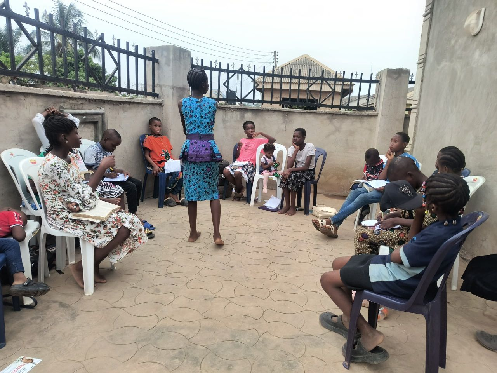

A weekly program to help children inculcate the tenets of Scripture as they learn, love & live the Word of God. Our goDsCell meetings create a community where children grow together in faith.
Our Beginnings
The goDsCell concept was inspired by the early church model in Acts 2:42-47. In 2019, we started with just 5 children meeting in a living room, sharing scriptures and praying together. Today, we have hundreds of goDsCells meeting across the nation, each led by trained child-leaders with adult mentors.
What Happens in a goDsCell?
Each goDsCell meeting follows this structure:
- Welcome & Icebreaker (15 mins) - Fun activities to build relationships
- Word Time (45 mins) - Interactive Bible study led by children
- Prayer & Ministry (30 mins) - Children pray for each other and their communities
- Action Challenge (30 mins) - Practical application of the week's lesson
Gallery
See glimpses of our goDsCells in action:

Our goDsCells are more than just meetings - they're spiritual families where children find acceptance, grow in faith, and discover their purpose in God.